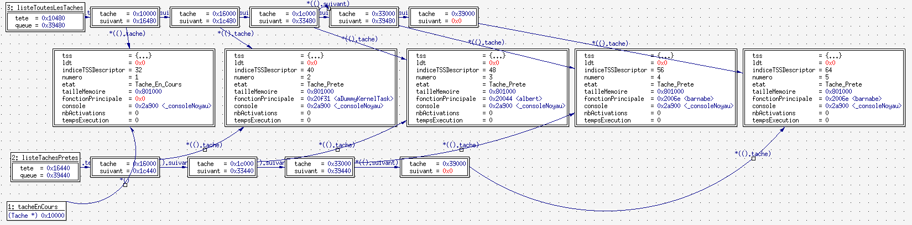

Gestion d’une tâche
Nous disposons désormais du minimum permettant d’exécuter quelques instructions et d’en voir les conséquences à l’écran. Je vous propose donc de mettre en place la notion de tâche qui nous permettra de faire avancer “en même temps” plusieurs activités. ManuX devient donc à partir de maintenant un système multitâche.
Attention, pour le moment, ce ne sera que du multitâche collaboratif. En effet, nous n’allons pas encore mettre en place du multitâche préemptif, ce qui signifie que une tâche ne rendra la main (enfin, le processeur) que lorsqu’elle en aura envie !
De plus, nous ne nous intéressons pas non plus à l’ordonnancement, et mettrons en place un simple round robin.
Définition d’une tâche
La structure d’une tâche est définie dans le fichier manux/tache.h au
travers d’une struture Tache. Afin de nous simplifier la vie, nous
allons utiliser dans ManuX l’aide proposée par les processeurs Intel[1].
De ce fait, la structure Tache contient des champs liés au processeur
et des champs purement liés au noyau.
Champs liés au noyau
Champs liés au processeur
-
IntelTSS tssqui permet, comme son nom laisse à penser, de stoquer les informations relatives à l’état de la tâche au niveau du processeur (tss pour Task State Segment). On trouvera des informations sur ce champs dans les documentations Intel. Dans ManuX, une initialisation minimale est faite de cette structure lors de la création d’une tâche danscreerTache. -
uint16 indiceTSSDescriptorreprésente l’indice, dans la gdt, du tss Descriptor de la tâche. C’est par unljmpvers ce champs que l’on va activer la tâche. -
DescriptorTable * ldtest la table locale de decripteurs associée à cette tâche.
x
Les descripteurs de tâche Intel
Le Task State Segment (tss) des processeurs Intel permet de stoquer et
de manipuler les informations relatives à une tâche. Dans ManuX, une
structure est définie permettant de décrire dans le noyau le tss de
chaque tâche : la structure IntelTSS est définie dans manux/tache.h
Création d’une tâche
Basculement vers une tâche
En ce qui concerne le basculement d’une tâche à l’autre, nous allons
profiter des mécanismes fournis par les processeurs Intel au travers de
l’instruction ljmp. L’Indirect far JMP permet en effet de faire un
basculement de tâche lorsque l’argument qui lui est passé, sur 48 bits
(oui madame, 6 octets !) est constitué d’un sélecteur de segment (sur 16
bits) qui référence un tss puis d’un offset (qui ne sera pas utilisé
pour le coup !).
Bref, le basculement d’une tâche vers une autre se résume à une instruction de saut !
Destruction d’une tâche
Gestion des listes de tâches
Il est évidemment important de ne pas perdre trace des tâches créées sur le système ! Nous allons pour cela les placer dans des listes.
La structure ListeTache permettant cela est définie dans le fichier
manux/listetaches.h
(dox) . Il est extrèmement simple
(liste simplement chaînée), donc je ne le détaille pas ici.
Une première liste est définie permettant de conserver toutes les tâches du système. Chaque tâche créée (et non encore détruite) sera donc présente dans cette liste.
D’autres listes seront créées permettant de stoquer les tâches en fonction de leurs activités. Une liste contiendra par exemple les tâches prêtes à être exécutées. D’autres listes contiendront les tâches en attente d’un événement spécifiques (typiquement la disponibilité d’une ressource).

Allocation des éléments de liste
Bon, là il faut qu’on parle d’un truc dont je ne suis pas très fier …
Pour ne pas avoir à s’em…bêter ici avec de la gestion dynamique de mémoire, et sûrement aussi dans un intérêt pédagogiqe évident, j’ai fait le choix de positionner les cellules impliquées dans la gestion des listes dans la page mémoire qui est allouée pour chaque tâche.
[1] Les systèmes récents, pour des raisons de performances, n’utilisent pas ces fonctionnalités.